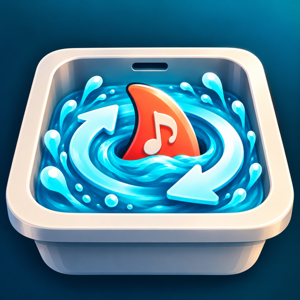

Try the FinSync beta
Your whole Jellyfin music library on your SD card, for any music player. Free, open source, Android.
Get it from Google Play
Best for most phones and players with the Play Store. Updates install automatically.
- Join the FinSync beta group (one click with your Google account; it doesn't email you)
- Become a tester on Google Play
- Install FinSync
Use the same Google account as the Play Store on your device. It can take a few minutes after joining before the app shows up.
No Play Store? Download the APK
For players without Google Play.
Want automatic updates? Add https://github.com/3EYE3Y3/finsync to Obtainium. FinSync also tells you when a new version is out. Play and APK installs can't update each other: to switch, uninstall first.
First run
- Type your Jellyfin server address and approve the Quick Connect code (or sign in with a password).
- Pick your SD card, or its Music folder.
- Read the summary, tap Sync. Music already on the card is reused, not downloaded again.
No server handy? Tap Try it with sample music on the first screen.
Found a problem?
Send feedback. Your device, music player and what happened is all I need.
FinSync is an independent app and isn't affiliated with or endorsed by the Jellyfin project. Privacy policy